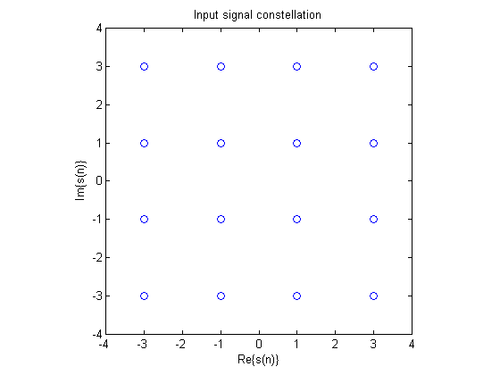
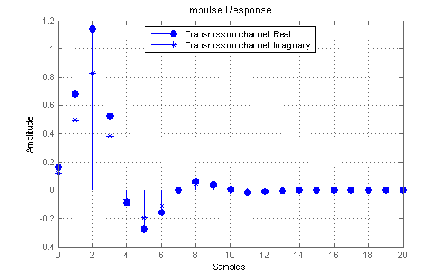
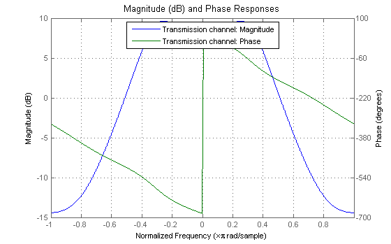
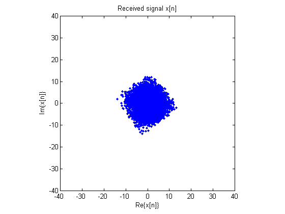
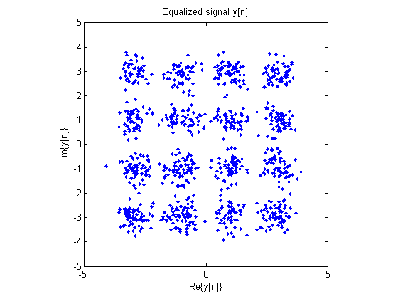
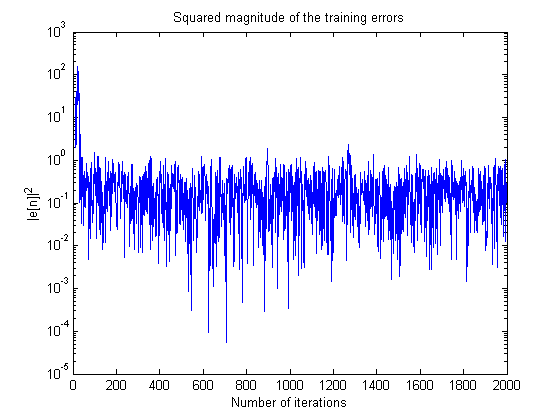
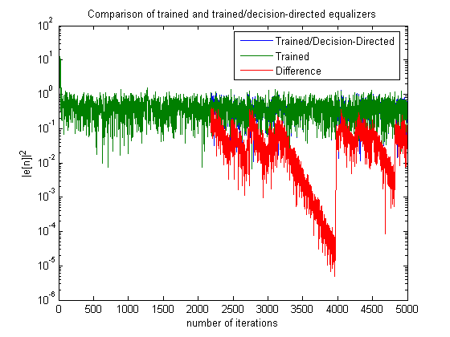

This demonstration illustrates the application of adaptive filters to channel equalization in digital communications. Channel equalization is a simple way of mitigating the detrimental effects caused by a frequency-selective and/or dispersive communication link between sender and receiver. For this demonstration, all signals are assumed to have a digital baseband representation. During the training phase of channel equalization, a digital signal s[n] that is known to both the transmitter and receiver is sent by the transmitter to the receiver. The received signal x[n] contains two signals: the signal s[n] filtered by the channel impulse response, and an unknown broadband noise signal v[n]. The goal is to filter x[n] to remove the inter-symbol interference (ISI) caused by the dispersive channel and to minimize the effect of the additive noise v[n]. Ideally, the output signal would closely follow a delayed version of the transmitted signal s[n].
Author(s): Scott C. Douglas
A digital signal carries information through its discrete structure. There are several common baseband signaling methods. We shall use a 16-QAM complex-valued symbol set, in which the input signal takes one of sixteen different values given by all possible combinations of {-3, -1, 1, 3} + j*{-3, -1, 1, 3}, where j = sqrt(-1). Let's generate a sequence of 5000 such symbols, where each one is equiprobable.
ntr = 5000; j = sqrt(-1); s = sign(randn(1,ntr)).*(2+sign(randn(1,ntr)))+j*sign(randn(1,ntr)).*(2+sign(randn(1,ntr))); plot(s,'o'); axis([-4 4 -4 4]); axis('square'); xlabel('Re\{s(n)\}'); ylabel('Im\{s(n)\}'); title('Input signal constellation');
The transmission channel is defined by the channel impulse response and the noise characteristics. We shall choose a particular channel that exhibits both frequency selectivity and dispersion. The noise variance is chosen so that the received signal-to-noise ratio is 30 dB.
b = exp(j*pi/5)*[0.2 0.7 0.9]; a = [1 -0.7 0.4]; % Transmission channel filter channel = dfilt.df2t(b,a); % Impulse response hFV = fvtool(channel,'Analysis','impulse'); legend(hFV, 'Transmission channel'); set(hFV, 'Color', [1 1 1])
% Frequency response set(hFV, 'Analysis', 'freq')
The received signal x[n] is the signal s[n] filtered by the channel impulse response with additive noise v[n]. We shall assume a complex Gaussian noise signal for the additive noise.
sig = sqrt(1/16*(4*18+8*10+4*2))/sqrt(1000)*norm(impz(channel)); v = sig*(randn(1,ntr) + j*randn(1,ntr))/sqrt(2); x = filter(channel,s) + v; plot(x,'.'); xlabel('Re\{x[n]\}'); ylabel('Im\{x[n]\}'); axis([-40 40 -40 40]); axis('square'); title('Received signal x[n]'); set(gcf, 'Color', [1 1 1])
The training signal is a shifted version of the original transmitted signal s[n]. This signal would be known to both the transmitter and receiver.
d = [zeros(1,10) s(1:ntr-10)];
To obtain the fastest convergence, we shall use the conventional version of a recursive least-squares estimator. Only the first 2000 samples are used for training. The output signal constellation shows clusters of values centered on the sixteen different symbol values--an indication that equalization has been achieved.
P0 = 100*eye(20); lam = 0.99; h = adaptfilt.rls(20,lam,P0); ntrain = 1:2000; [y,e] = filter(h,x(ntrain),d(ntrain)); plot(y(1001:2000),'.'); xlabel('Re\{y[n]\}'); ylabel('Im\{y[n]\}'); axis([-5 5 -5 5]); axis('square'); title('Equalized signal y[n]'); set(gcf, 'Color', [1 1 1])
Plotting the squared magnitude of the error signal e[n], we see that convergence with the RLS algorithm is fast. It occurs in about 60 samples with the equalizer settings chosen.
semilogy(ntrain,abs(e).^2); xlabel('Number of iterations'); ylabel('|e[n]|^2') title('Squared magnitude of the training errors'); set(gcf, 'Color', [1 1 1])
Once the equalizer has converged, we can use decision-directed adaptation to continue adaptation during periods where no training data are available. In such cases, the desired signal d[n] is replaced by a quantized version of the output signal y[n] that is nearest to a valid symbol in the transmitted signal. We can use the RLS adaptive algorithm to implement this decision-directed algorithm in a sample-by-sample mode.
e = [e(1:2000) zeros(1,3000)]; h.ResetBeforeFiltering = 'off'; for n=2001:5000 yhat = h.Coefficients*[x(n);h.States]; ydd = round((yhat+1+j)/2)*2-1-j; if (abs(real(ydd))>3) ydd = 3*sign(real(ydd)) + imag(ydd); end if (abs(imag(ydd))>3) ydd = real(ydd) + 3*sign(imag(ydd)); end e(n) = d(n) - yhat; [yhat,edd] = filter(h,x(n),ydd); end
If the symbol decisions are correct, then decision- directed adaptation produces identical performance to trained adaptation. We can compare the error sequence from the combined training/decision-directed adaptive equalizer with one that uses training data over the whole received signal. A sudden jump in the difference in the error signals indicates an incorrect symbol decision was used in the decision- directed algorithm. So long as these errors are infrequent enough, the effects of these errors decay away, and the decision-directed equalizer's performance remains similar to that of the trained equalizer.
reset(h); [ytrain,etrain] = filter(h,x,d); n = 1:5000; semilogy(n,abs(e),n,abs(etrain),n,abs(e-etrain)); xlabel('number of iterations'); ylabel('|e[n]|^2'); title('Comparison of trained and trained/decision-directed equalizers'); legend('Trained/Decision-Directed','Trained','Difference'); set(gcf, 'Color', [1 1 1])